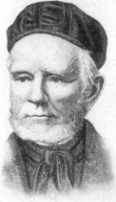
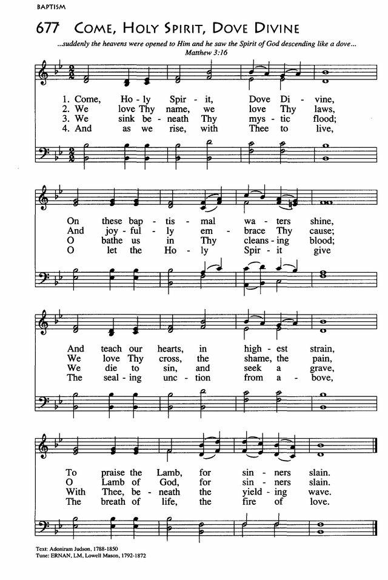

|
|
颂主新歌 |
|
1 Now in a song of grateful praise, Refrain: 2 How sov'reign, wonderful, and free 3 Since e'er my soul has known His love, 4 And when to that bright world I rise, |
1.主基督宏恩同感戴,今赞美发起欢声来,
|
|
https://www.mred365.cn/szxg/7131.html
|
|
|
|
|


Now in a song of grateful praise https://youtu.be/XROtbaiR9qI - Trumpet Hymn: Now, in a Song of Grateful Praise - Eddie Lewis
Trumpet
https://youtu.be/WHQuCYRHznI - Now in a song of grateful praise
https://youtu.be/mL5Ne_zEmoA
| Text: | Grateful Praise |
| Author: | Samuel Medley |
| Short Name: | Samuel Medley |
| Full Name: | Medley, Samuel, 1738-1799 |
| Birth Year: | 1738 |
| Death Year: | 1799 |
Medley, Samuel,

born June 23, 1738, at Cheshunt, Herts, where his father kept a school. He received a good education; but not liking the business to which he was apprenticed, he entered the Royal Navy. Having been severely wounded in a battle with the French fleet off Port Lagos, in 1759, he was obliged to retire from active service. A sermon by Dr. Watts, read to him about this time, led to his conversion. He joined the Baptist Church in Eagle Street, London, then under the care of Dr. Gifford, and shortly afterwards opened a school, which for several years he conducted with great success. Having begun to preach, he received, in 1767, a call to become pastor of the Baptist church at Watford. Thence, in 1772, he removed to Byrom Street, Liverpool, where he gathered a large congregation, and for 27 years was remarkably popular and useful. After a long and painful illness he died July 17, 1799. Most of Medley's hymns were first printed on leaflets or in magazines (the Gospel Magazine being one). They appeared in book form as:—
Tune Information
| Title: | ERNAN (Mason) |
| Composer: | Lowell Mason (1850) |
| Meter: | 8.8.8.8 |
| Incipit: | 53451 17671 66655 |
| Key: | B♭ Major |
| Copyright: | Public Domain |
| Short Name: | Lowell Mason |
| Full Name: | Mason, Lowell, 1792-1872 |
| Birth Year: | 1792 |
| Death Year: | 1872 |
Dr. Lowell Mason

(the degree was conferred by the University of New York) is justly called the father of American church music; and by his labors were founded the germinating principles of national musical intelligence and knowledge, which afforded a soil upon which all higher musical culture has been founded. To him we owe some of our best ideas in religious church music, elementary musical education, music in the schools, the popularization of classical chorus singing, and the art of teaching music upon the Inductive or Pestalozzian plan. More than that, we owe him no small share of the respect which the profession of music enjoys at the present time as contrasted with the contempt in which it was held a century or more ago. In fact, the entire art of music, as now understood and practiced in America, has derived advantage from the work of this great man.

Words: Samuel Medley (b. June 23, 1738; d. July 17,
1799)
Music: (unknown. L.M. tune)
Links:
Wordwise Hymns (Samuel
Medley)
The Cyber
Hymnal
Hymnary.org
Note: The Cyber Hymnal has this hymn set to an anonymous tune from a Salvation Army compilation. Both Sankey’s Sacred Songs and Solos, and C.S.S.M.’s Golden Bells hymn books use another anonymous tune–the one with which I’m more familiar. Both are L.M. (Long Metre) tunes.
Medley’s father was a school teacher, and a friend of scientist Sir Isaac Newton. Young Samuel was apprenticed to an oil dealer but, abandoning that career, he joined the British Navy. After he was wounded in a battle with the French fleet, he was taken to the home of his godly grandfather to recuperate. The Lord used the prayers and witness of that good man, and the reading of a sermon by Isaac Watts, to bring Samuel Medley to faith in Christ.
Unfit for a physically active naval career because of the effects of his injury, and in the glow of his new-found faith, Medley trained for the ministry. When someone wrote and asked him in what town his church was situated, he responded with a rhyming couplet: “In one where sin makes many a fool, / Known by the name of Liverpool!”
By God’s grace his pastoral work was abundantly fruitful, and he also wrote dozens of hymns. Several of his songs continue to be used today: O Could I Speak the Matchless Worth; Awake My Soul to Joyful Lays; and I Know That My Redeemer Lives, in addition to Now in a Song of Joyful Praise.
How many times have you been disappointed and annoyed that something you purchased did not live up to expectations? No wonder we’re becoming cynical. We’ve learned to treat with skepticism advertisements that proclaim the worth of a particular product. They seem to imply that our lives would surely approach perfection, if only we had the right toothpaste or deodorant, cookware or cleaner, computer or car.
Personally, I can recall times when my wife and I had our expectations rudely dashed, once the product arrived, and we tried it out. There was a feeling that we had somehow been deceived and cheated. The experience has served to increase our wariness of claims that are made. We’ve come to treat the glowing speeches of our politicians the same way. Promises made are too often not promises kept.
However, that cannot be said of the Lord Jesus Christ, who “went about doing good” (Acts 10:38). As another said of Him, “He has done all things well” (Mk. 7:37). We have a praise hymn based on that last Scripture, over two centuries old, written by Samuel Medley. The phrase, “My Jesus has done all things well, based on Mark 7:37, is repeated in all ten stanzas of the hymn. It is a way of saying that the Lord fulfilled–is fulfilling, and will yet fulfil–all the promises made by Him or about Him. In modern terms we could say He is “As Advertised.”
CH-1) Now, in a song of grateful praise,
To my dear Lord my voice I’ll raise;
With all His saints I’ll join to tell–
My Jesus has done all things well.
CH-2) All worlds His glorious power confess,
His wisdom all His works express;
But oh! His love what tongue can tell?
My Jesus has done all things well.
Centuries before, Isaiah had prophesied about the coming Messiah’s power to heal (Isa. 35:5-6), and again the Lord Jesus did all that was promised and more (cf. Lk. 7:20-22). He demonstrated power over the demonic world (Mk. 1:27), over disease (Mk. 2:12), over the elements of nature (Mk. 4:41), and over death (Mk. 5:35, 41-42), proving again He was who He said He was (cf. Acts 2:22).
Not only in His deeds, but in His words, the Lord Jesus showed Himself to be infinitely above all others. In His daily teaching of the people, “[Jesus] taught them as one having authority” (Mk. 1:22). With utter confidence, He declared, “Heaven and earth will pass away, but My words will by no means pass away” (Matt. 24:35), they are unfailingly true. No wonder a Roman officer said, “No man ever spoke like this Man!” (Jn. 7:46).
CH-5) And since my soul hath known His love,
What blessings hath he made me prove!
Mercy, which doth all praise excel,
My Jesus has done all things well.
CH-10) And when to those bright worlds I rise,
And join the anthem with the skies;
Above the rest, this note shall swell,
My Jesus has done all things well.
Questions:
1) What disappointment have you had recently over something that did not
live up to promises or expectations?
1) In what particular thing in your own life can you say with sincerity, “My Jesus has done all things well?
Links:
Wordwise Hymns (Samuel
Medley)
The Cyber
Hymnal
Hymnary.org
https://wordwisehymns.com/2015/08/12/now-in-a-song-of-grateful-praise/